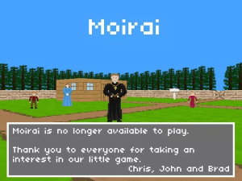

Moirai, é jogo que oferece um grande "MIND-BLOWING" de forma muito criativa, cancelado por sua comunidade tóxica.
Moirai é um jogo de primeira pessoa onde você anda ao redor de uma pequena cidade de madeireiros, fazendeiros e mineiros, tentando encontrar uma mulher que você descobre que desapareceu conversando com um padre que é o primeiro personagem que você interage no jogo. o jogo é estranho a primeira vista pois mistura 3d e 2d, algumas pessoas acham feio mas pessoalmente eu gosto. Depois de investigar, você descobre que a mulher entrou em uma mina sozinha, e você deve segui-la para encontrá-la. Um dos mineiros informa que ele ouviu sons estranhos e lhe dá uma faca para que você possa se defender contra o que você encontrar, no caminho você encontra um fazendeiro com uma faca e manchado de sangue e você pode perguntar: por que você tem sangue na roupa?, porque você tem uma faca? ou o que você fez?, ele sempre tinha uma resposta diferente para cada jogador e você poderia decidir se iria mata-lo ou deixa-lo ir
após a decisão acontece o MINDBLOWING, você encontra a mulher e ela esta sangrando e deitada no chão, ela explica que o marido dela teria encontrado uma pepita de ouro mas ele não confiava nela e sumiu nas minas, o filho vai as minas para procurar o pai e como o jogo mostra ela acaba morta pois mais cedo achamos ossos infantis, após isso a mulher vai a mina para se suicidar e pede para que você termine o serviço, dai você tem duas opções "terminar o serviço" e "não" caso você escolha não a mulher te chama de covarde e joga sangue em você, quando você esta saindo você acha outro fazendeiro e então aparece um texto mais ou menos assim: por que você tem sangue na roupa?, porque você tem uma faca? ou o que você fez? foi isso que você perguntou ao último jogador, agora coloque seu e-mail e sua resposta para responder o próximo jogador.
esse jogo foi além de um jogo, foi um experimento e foi uma ídeia genial. Mas o ser humano sempre tem que estragar tudo, imagine uma forma de enviar uma mensagem anônima para alguém, muitos jogadores viram uma oportunidade nisso, após um tempo o jogo foi fechado para evitar problemas legais e toda vez que o jogo era aberto aparecia essa mensagem
um vídeo mais completo para você entender de forma mais clara e uma versão menos funcional já que o original foi fechado